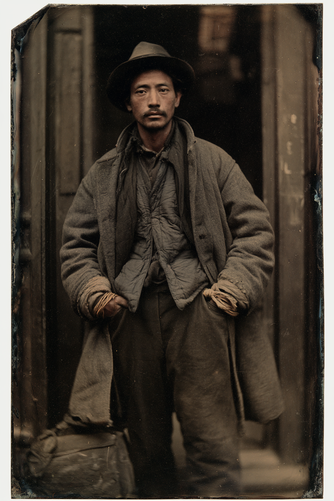

Archetyp: CHI MASTER (Chi-Meister)
Einsteigerfigur: eine Haltung, ein Wurf, kein Nachladen — er geht nach vorn und bleibt stehen.
Unterschreibt englische Briefe als „A. Yuen Lam“. Die Deadwood-Bergleute nennen ihn „Uncle Lam“, was er nicht mehr korrigiert.
Er hat nie den ersten Schlag geführt und nie den letzten verloren.
| Agility | d8 | 2 |
| Smarts | d6 | 1 |
| Spirit | d8 | 2 |
| Strength | d4 | 0 |
| Vigor | d4 | 0 |
| Skill | Attr. | Die | Pts. |
|---|---|---|---|
| Fighting | Agi | d8 | 3 |
| Focus | Spi | d8 | 3 |
| Healing | Sma | d6 | 2 |
| Athletics | Agi | d6 | 1 |
| Notice | Sma | d6 | 1 |
| Persuasion | Spi | d6 | 1 |
| Stealth | Agi | d6 | 1 |
| Weapon | Range | Damage | AP | RoF | Wt. | Cost |
|---|---|---|---|---|---|---|
| Messer | 3/6/12 | Stä+W4 | – | 1 | 0,5 | $2 |
| auch als Wurfwaffe | ||||||
| Power | PP | Range | Dur. | Effect |
|---|---|---|---|---|
| Deflection | 3 | Self | 5 | attackers –2, –4 with a raise |
| Protection | 1 | Self | 5 | Armor +2, +4 with a raise |
| Boost/Lower Trait | 2 | Self / Touch | 5 / Instant | Trait ±1 die type, ±2 with a raise |
Wing Tsun: +1 Parade, –2 auf jeden erlittenen Nahkampfschaden
Innerer Fokus: nützliche Mächte nur auf sich selbst, nachteilige per Berührung
Hintergrund. Er war siebzehn, als die Central Pacific ihn aus Toisan holte, und neunzehn, als er den Winter 1866 im Summit-Tunnel verbrachte, wo der Schnee über die Baracken ging und Männer im Frühjahr ausgegraben wurden, die Spitzhacke noch in der Hand. Sein Sifu war ein Hakka-Bohrmeister namens Ng Tai-hoi, der im Roten-Turban-Aufstand gekämpft hatte und am Cape Horn Wing Chun auf der Trasse unterrichtete, eine Form pro Nacht — denn wer auf einem Gerüst seine Mitte hält, fällt nicht herunter. Im Juni ’67 legten dreitausend von ihnen den Berg still, für gleichen Lohn und den Zehnstundentag; Crocker ließ die Essenswagen umkehren, nach einer Woche war es vorbei, und Lam lernte, dass die Welt Rechthaben nicht belohnt. ’76 kam er hinter dem Gold nach Deadwood und blieb wegen des Chinatowns am Nordende, wo er den Joss-Tempel hält, englische Verträge Männern vorliest, die nicht lesen können, und die Person ist, die der Bezirksverband schickt, wenn eine Wäscherei brennt oder ein Mann von einem Iron-Dragon-Claim in den Black Hills nicht zurückkommt. Er reitet mit Anglos, einem Sioux-Fährtenleser und einem abgesetzten Prediger aus dem schlichtesten Grund: ein Sheriff nimmt ihm sein Wort nicht ab und ihnen schon.
Build. Geschicklichkeit W8, Verstand W6, Willenskraft W8, Stärke W4, Konstitution W4 · Parade 6 (7 in Wing-Tsun-Haltung), Robustheit 4 Kämpfen W8, Fokus W8, Heilen W6, Athletik W6, Bemerken W6, Überreden W6, Heimlichkeit W6 Talente: Martial Artist (Kampfkünstler, freies Menschentalent), Arcane Background (Chi-Meister), Superior Kung Fu: Wing Tsun (Überlegenes Kung Fu) Handicaps: Vow (Schwur) — Major: dem Deadwooder Bezirksverband verpflichtet; er geht, wohin ihre Briefe ihn schicken, und bringt Leute atmend zurück · Pacifist (Pazifist) — Minor: kämpft nur in Notwehr. Das ist Doktrin, nicht Zimperlichkeit: „Tote lernen nicht.“ · Cautious — Minor Mächte (15 MP): Abwehren (Pflicht), Schutz, Eigenschaft erhöhen/senken — er nutzt meist die Senken-Hälfte: er fängt das Handgelenk beim Fehlschlag, und die Stärke des Mannes fällt einen Würfeltyp. Trappings: nichts sieht nach Magie aus. Er tapt die Handgelenke, atmet durch die Zähne aus und setzt sein Gewicht. Abwehren ist Chi Sao — klebende Hände, die lesen, wohin der Schlag geht, bevor er ankommt. Ausrüstung: Arzttasche, Reitermantel, Messer, Maultier mit Sattel, Feldflasche und zehn Tage Proviant; dazu Seil und Laterne, weil man Leute aus Schächten holt und nicht hineinruft. Der Zopf unter dem Hut aufgerollt. Eine Dose Dit Da Jow — Schlagmedizin-Wein nach dem Rezept seines Sifu, weshalb sein Heilen-Würfel ein W6 ist und kein W4. Ein Rattan-Trainingsring, als Armreif getragen. Ein Iron-Dragon-Bahnausweis. Und 115 Dollar 90 Verbandsgeld, flach an die Rippen genäht — er kennt den Betrag auf den Cent, weil er nicht seiner ist.
Die Rechnung. Parade 7, Angreifer bei −2, eingehender Nahkampfschaden um 2 reduziert und obendrauf +2 Panzerung. Gegen Fäuste und Messer ist er nahezu untreffbar und nahezu unverletzbar. Gegen einen Colt Army auf zwölf Meter ist er ein sechzig Kilo schwerer Mann mit Robustheit 4 und ohne Panzerung. Diese Asymmetrie ist die Figur. Beim ersten Aufstieg mit Konstitution W6 abmildern.
Aufhänger. Die Briefe des Verbands schicken ihn neuerdings an Orte, wo die Vermissten nicht vermisst sind. Sie arbeiten — nachts in einem Schacht, still, mit toten Augen, drei Schichten ohne Wasser, für ein Syndikat, dessen Lohnbuchhalter im Hauptbuch des Verbands selbst steht. Sein Gelübde sagt: gehorche den Briefen. Was er zu ahnen beginnt, ist, dass die Briefe das Falsche sind. Dunkler, wenn der Marshal ein Messer will: im Juli ’77, als sich die Sandlots nach Chinatown ergossen und die Wäschereien brannten, hatte Lam Befehl, ein Lagerhaus zu bewachen. Er gehorchte. Ng Tai-hoi starb drei Straßen weiter. Er hat das in sieben Jahren niemandem erzählt, und es ist der Grund, warum Pazifismus bei ihm ein Handicap ist und keine Tugend — er weiß nicht, ob er die Regel hält, weil sie richtig ist, oder weil er Angst davor hat, was er täte, wenn er sie fallen ließe.
Notizen. So sehen die sechs Zeilen des Bogens am Tisch aus.
Warum es Spaß macht. Du bist die Tür. Irgendwer muss in der ersten Reihe stehen und vier Schläge einstecken, ohne einen auszuteilen, und du bist gebaut, um das mathematisch unbedenklich und dramatisch quälend zu machen. Jeder Kampf hat dieselbe Form: du absorbierst, du absorbierst, du fängst einen Arm — und dann ist der Raum still vorbei.
Regelgrundlage: Regelnotizen · Archetyp-Notizen